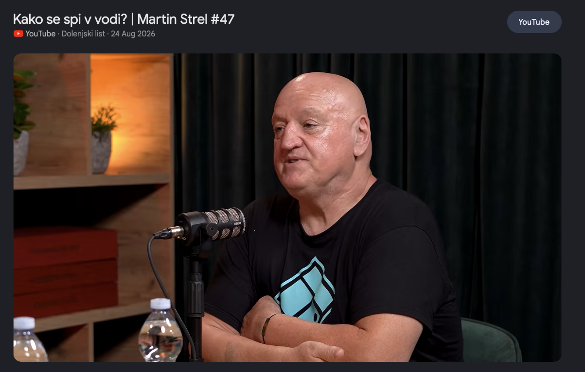

Deep work in progress

Martin Strel #47: notes
- "A fish doesn't write unit tests. A fish just swims."
KOFEINCVIČEK
TODO
- renew claude subscription!!
- WRITE DAILY UPDATE !!! REMINDER !!!!
stackoverflow
How do I exit terminal? [duplicate]
▲
1,247
✓
Did you even read the docs? This is trivial. RTFM. Honestly, I don't know how you got this far in your career.
xX_senior_dev_Xx 847k rep
Claude is thinking. You are waiting.
Alt + Tab (or Cmd + Tab)
Alt-Tabs today: 0